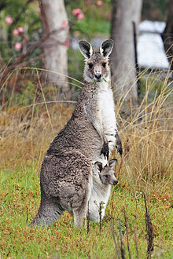

The kangaroo is a marsupial from the family Macropodidae (macropods, meaning "large foot"). In common use the term is used to describe the largest species from this family, especially those of the genus Macropus: the red kangaroo, antilopine kangaroo, eastern grey kangaroo, and western grey kangaroo.[1] Kangaroos are indigenous to Australia. The Australian government estimates that 34.3 million kangaroos lived within the commercial harvest areas of Australia in 2011, up from 25.1 million one year earlier.
As with the terms "wallaroo" and "wallaby", "kangaroo" refers to a polyphyletic grouping of species. All three refer to members of the same taxonomic family, Macropodidae, and are distinguished according to size. The largest species in the family are called "kangaroos" and the smallest are generally called "wallabies". The term "wallaroos" refers to species of an intermediate size.[3] There is also the tree-kangaroo, another genus of macropod, which inhabits the tropical rainforests of New Guinea, far northeastern Queensland and some of the islands in the region. A general idea of the relative size of these informal terms could be:
